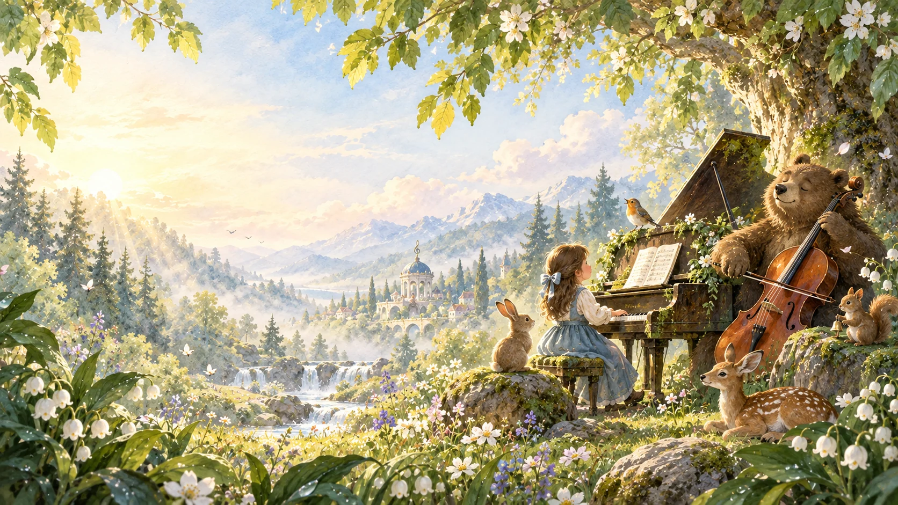

鋼琴老師用數位古典音樂繪本
音樂森林
找到一首音樂，翻開今天的故事。
最近使用
我的常用曲目
快速選曲
40 首音樂
課堂小工具
快速選曲
六個教學主題
先從孩子能感受的動物、自然、故事與動作開始。
音樂世界
探索曲目
選一個故事
今晚翻開哪一頁？
每個故事約 2 分鐘，最後回到真正的鋼琴。
小松鼠的手指任務
選一隻手
手指彎彎的，像站穩的小橋。
找到 3 號指
按手指，也可以按鍵盤 1–5。
拇指 1 · 食指 2 · 中指 3 · 無名指 4 · 小指 5
Tempo 的節奏小徑
聽一遍，再換你
不用很準，先找到穩穩的腳步。
準備好了嗎？
把音樂放進身體
跟著音樂動一動
不用攝影機。聽一小段，跟著角色試試看。
老師快速示範音高
8 鍵小鋼琴
點琴鍵，或按 A S D F G H J K。
簡短模仿
C → D → E
只聽音符順序，不比速度。
先聽，再彈回來。
示範後，回到真正的鋼琴找同樣的高低。
陪伴者的小紙條
今天孩子接觸了
紀錄只存在這個裝置，不需帳號。
我們正在培養
- 👂 聆聽
- 🥁 節奏
- 🐢 快慢
- 🦁 強弱
- 🖐️ 手指編號
- 🌙 音樂想像
一次使用 5–10 分鐘。
最重要的活動仍是回到真實樂器、唱歌、拍手與身體律動。
古典作品只播放本機合法錄音；沒有素材時，不用合成旋律冒充。